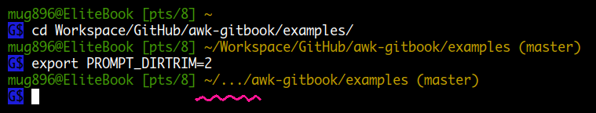

Bourne Shell Variables
환경 변수( Environment variable ) 기능은 1979 년 Version 7 Unix 에 처음 소개된 후에 모든 Unix OS 와 Linux, MacOS, DOS, Windows 등에서 사용됩니다. shell 에서 특정 변수값을 설정한 후에 export 하게 되면 프로그램이 실행될 때 해당변수값이 전달되어 사용할 수 있게 됩니다.
다음은 shell 에서 사용되는 변수들입니다.
CDPATH
자주 사용하는 디렉토리를 : 로 분리해 등록해 놓으면 cd 할 때 전체 경로를 입력할 필요가 없고 tab 키를 이용한 자동완성을 사용할 수 있습니다.
$ echo $CDPATH
.:/home/razvan/school/current:/home/razvan/projects
$ pwd
/home/razvan
$ cd so
/home/razvan/school/current/so
$ cd p2p-next
/home/razvan/projects/p2p-next
HOME
현재 사용자 홈디렉토리
IFS
Internal Field Separator. 단어분리 ( word splitting ) 시에 이 값을 기준으로 단어가 분리됩니다. read 명령으로 읽어들인 라인을 필드로 분리할때, 매개변수 확장을 통해 array 에 원소들을 입력할때도 사용됩니다. 기본값은 space, tab, newline 3 개로 IFS 변수가 unset 됐을때도 적용됩니다. IFS 값이 null 이면 단어분리가 일어나지 않습니다.
$ echo -n "$IFS" | od -a
0000000 sp ht nl
$MAILPATH 변수가 설정되있지 않을때 mailbox 파일이나 maildir 디렉토리를 등록해 놓으면 메일이 왔을때 알려줍니다.
MAILPATH
mailbox 파일들을 : 로 분리하여 등록해놓으면 메일이 왔을때 알려줍니다.
OPTARG
getopts 명령에서 사용되는 변수로 현재 옵션값을 나타냅니다.
OPTIND
getopts 명령에서 사용되는 변수로 다음에 처리할 옵션 index 를 나타냅니다.
PATH
외부 명령을 실행할 때 자동으로 검색할 디렉토리를 PATH 환경 변수에 등록해 놓습니다.
명령을 찾을 때는 앞에서부터 등록된 순서대로 찾기 때문에 동일한 이름을 가진 명령이
존재할 경우 제일 앞의 디렉토리에 있는 명령이 실행되게 됩니다.
디렉토리는 : 문자로 분리해서 등록하고 공백없이 붙여 써야 합니다.
: 문자가 맨앞 or 맨뒤 에 오거나 :: 와 같이 값이 empty 가 될경우
현재 디렉토리도 검색하게 되므로 주의할 필요가 있습니다.
PATH=:/bin:/usr/bin:/usr/local/bin # ":" 가 맨앞에 위치 (.: 와 같음)
PATH=/bin:/usr/bin:/usr/local/bin: # ":" 가 맨뒤에 위치 (:. 와 같음)
PATH=/bin:/usr/bin::/usr/local/bin # "::" (:.: 와 같음)
명령 실행시 스크립트 내에서 설정되는
$0변수의 값은선택된 경로 + 파일이름이 됩니다.
PS1
Default interaction prompt 입니다. 프롬프트 모양을 변경하기 위해 여러가지 특수문자 를 사용할수 있습니다.
# \u – 아이디
# \h – 호스트이름
# \w – 현재 디렉토리의 전체경로
bash-3.2$ export PS1="\u@\h \w> "
ramesh@dev-db ~> cd /etc/mail
ramesh@dev-db /etc/mail>
PS2
Continuation interactive prompt 입니다. 여러줄의 명령을 입력할때 나타납니다.
# 다음줄부터 PS2 값으로 설정된 '>' 문자가 보입니다.
ramesh@dev-db ~> myisamchk --silent --force --fast --update-state \
> --key_buffer_size=512M --sort_buffer_size=512M \
> --read_buffer_size=4M --write_buffer_size=4M \
> /var/lib/mysql/bugs/*.MYI
$ cat <<\@ # heredoc 사용시
> 111
> 222
> @
111
222
Bash Variables
BASH
현재 실행된 bash 프로그램의 전체경로 입니다.
BASHOPTS
shopt 명령으로 설정한 옵션들이 : 로 분리되어 저장됩니다.
BASHPID
이것은 실제 해당 shell 프로세스의 PID 를 나타냅니다.
그러므로 $$ 값과는 달리 subshell 에서 각각 다른 값을 가집니다.
( 각각 다은 프로세스 이므로 )
BASH_ALIASES
alias 명령에 의해 설정된 associative array 입니다.
$ echo "${!BASH_ALIASES[@]}" # 전체 alias 이름을 출력
mv cp ...
$ echo "${BASH_ALIASES[@]}" # 전체 alias value 를 출력
...
$ echo "${BASH_ALIASES[mv]}"
mv -i
$ echo "${BASH_ALIASES[cp]}"
cp -i
BASH_ARGC
shopt -s extdebug 옵션이 설정돼 있을 경우에 사용되며 현재 실행되는 함수의 인자수 call stack 을 나타내는 array 변수입니다.
가령 함수 func1 11 에서 func2 22 33 를 호출하여 실행 중이라면 ${BASH_ARGC[@]} 값은 2 1 가 됩니다.
BASH_ARGV
shopt -s extdebug 옵션이 설정돼 있을 경우에 사용되며 현재 실행되는 함수의 인자값 call stack 을 나타내는 array 변수입니다.
주의할 것은 표시되는 인자의 순서인데 가령 함수 func1 11 에서 func2 22 33 를 호출하여 실행 중이라면 ${BASH_ARGV[@]} 값은 33 22 11 가 됩니다.
#!/bin/bash
shopt -s extdebug
func2 () {
echo "BASH_ARGC[0] : ${BASH_ARGC[0]}"
echo "BASH_ARGC[1] : ${BASH_ARGC[1]}"
echo "BASH_ARGV[0] : ${BASH_ARGV[0]}"
echo "BASH_ARGV[1] : ${BASH_ARGV[1]}"
echo "BASH_ARGV[2] : ${BASH_ARGV[2]}"
}
func1 () {
func2 222 333
}
func1 111
########### 실행 결과 ############
# shopt -s extdebug 옵션을 설정하지 않을 경우
$ ./test.sh $ /test.sh
BASH_ARGC[0] : 2 BASH_ARGC[0] :
BASH_ARGC[1] : 1 BASH_ARGC[1] :
BASH_ARGV[0] : 333 BASH_ARGV[0] :
BASH_ARGV[1] : 222 BASH_ARGV[1] :
BASH_ARGV[2] : 111 BASH_ARGV[2] :
다음과 같은 경우는 shopt -s extdebug 옵션을 설정하지 않아도 같은 결과가 출력됩니다.
#!/bin/bash
echo "BASH_ARGC[0] : ${BASH_ARGC[0]}"
echo "BASH_ARGC[1] : ${BASH_ARGC[1]}"
echo "BASH_ARGV[0] : ${BASH_ARGV[0]}"
echo "BASH_ARGV[1] : ${BASH_ARGV[1]}"
echo "BASH_ARGV[2] : ${BASH_ARGV[2]}"
########### 실행 결과 ############
$ ./test.sh 111 222 333
BASH_ARGC[0] : 3
BASH_ARGC[1] :
BASH_ARGV[0] : 333
BASH_ARGV[1] : 222
BASH_ARGV[2] : 111
BASH_CMDS
hash builtin 명령에서 사용하는 associative array 입니다. 값을 추가하거나 삭제하면 동일하게 hash 테이블에 반영됩니다.
$ echo "${BASH_CMDS[@]}"
/usr/bin/mv /usr/bin/vi /usr/bin/cp /usr/bin/ls /usr/bin/gcc /usr/bin/awk
/usr/bin/lsof /usr/bin/strace /usr/bin/display /usr/bin/sudo /usr/bin/more
$ hash
hits command
3 /usr/bin/mv
14 /usr/bin/vi
1 /usr/bin/cp
17 /usr/bin/ls
. . .
. . .
BASH_COMMAND
현재 실행중인 명령을 나타냅니다.
$ echo "\$BASH_COMMAND => $BASH_COMMAND"
$BASH_COMMAND => echo "\$BASH_COMMAND : $BASH_COMMAND"
-----------------------------------------------------
$ trap 'echo \"$BASH_COMMAND\" 명령이 실패하였습니다. 에러코드: $?' ERR
$ asdfgh --foo bar
asdfgh: command not found
"asdfgh --foo bar" 명령이 실패하였습니다. 에러코드: 127
BASH_COMPAT
Bash compatibility level 을 설정할수 있습니다. 설정을 안했을 경우는 현재버전으로 됩니다.
BASH_ENV
터미널을 새로 열때마다 interactive shell 이 시작되면서 .bashrc 파일이 실행됩니다. 비슷하게 non-interactive shell 인 스크립트 파일이 실행될때 마다 실행되는 파일을 이 변수에 등록할 수 있습니다. 스크립트 파일용 .bashrc 인 셈입니다.
BASH_EXECUTION_STRING
bash -c 형식으로 실행시 사용된 명령구문을 나타냅니다.
BASH_LINENO
현재 실행중인 함수의 caller 의 라인넘버 call stack 을 나타내는 array 변수입니다. 가령 a() 함수의 라인번호 10 에서 b() 함수를 호출하고 b() 함수의 라인번호 20 에서 c() 함수를 호출하여 현재 실행중이라면 ${BASH_LINENO[0]} 는 caller 라인번호인 20 이되고 ${BASH_LINENO[1]} 는 10 이 되는 식입니다. ${BASH_SOURCE[$i+1]} 와 같이 사용하면 caller 의 정확한 위치를 알수있습니다.
BASH_REMATCH
해당 페이지 참조
BASH_SOURCE
현재 실행 중인 명령이 위치한 파일이름의 source stack 을 나타내는 array 변수입니다.
가령 AA.sh 에서 BB.sh 을 source 하고 BB.sh 에서 CC.sh 을 source 하여
현재 실행 중이라면 ${BASH_SOURCE[0]} 은 CC.sh 이되고 ${BASH_SOURCE[1]} 은 BB.sh 이 ... 되는 식입니다.
$ cat AA.sh $ cat BB.sh
#!/bin/bash #!/bin/bash
source BB.sh source CC.sh # 또는 ". CC.sh"
................................................
$ cat CC.sh
#!/bin/bash
echo "BASH_SOURCE : $BASH_SOURCE"
echo "BASH_SOURCE[0] : ${BASH_SOURCE[0]}"
echo "BASH_SOURCE[1] : ${BASH_SOURCE[1]}"
echo "BASH_SOURCE[2] : ${BASH_SOURCE[2]}"
############ 실행 결과 #############
$ ./AA.sh
BASH_SOURCE : CC.sh
BASH_SOURCE[0] : CC.sh
BASH_SOURCE[1] : BB.sh
BASH_SOURCE[2] : ./AA.sh
BASH_SUBSHELL
subshell 의 중첩된수를 나타냅니다.
$ echo $BASH_SUBSHELL
0
$ (echo $BASH_SUBSHELL; (echo $BASH_SUBSHELL))
1
2
BASH_VERSINFO
bash 버전정보를 나타내는 array 변수 입니다.
BASH_VERSION
bash 버전정보를 나타냅니다.
BASH_XTRACEFD
xtrace 메시지만 특정 FD (file descriptor) 로 보낼때 사용합니다.
set -o xtrace 옵션을 사용하여 xtrace 를 하면 기본적으로 stderr 로 메시지가 출력됩니다. 그러므로 실행되는 명령들 중에서 에러 메시지가 발생하면 둘이 섞이게 되는데 이 변수를 이용하면 xtrace 메시지만 특정 FD 로 보낼 수 있습니다.
-------------- test.sh ---------------
#!/bin/bash
exec 3> xtrace.txt # FD 3번을 생성하고 xtrace.txt 로 출력
BASH_XTRACEFD=3 # trace 메시지를 FD 3번 으로 보냄
set -x
date -@ # error 메시지 발생
AA=100
BB=200
CC=`expr $AA + $BB`
date -@ # error 메시지 발생
set -
----------------------------------------
# 오류 메시지는 기존대로 stderr 로 출력
$ ./test.sh
date: invalid option -- '@'
Try 'date --help' for more information.
date: invalid option -- '@'
Try 'date --help' for more information.
$ cat xtrace.txt
+ date -@
+ AA=100
+ BB=200
++ expr 100 + 200
+ CC=300
+ date -@
+ set -
CHILD_MAX
종료된 child process 의 상태값을 얼마나 기억할지를 나타냅니다.
COLUMNS
현재 터미널의 컬럼수를 나타냅니다. select 명령에 의해 사용됩니다.
COMP_CWORD
자동완성 함수에서 사용되는 변수로 명령 라인에서 현재 커서가 위치한 단어 index 를 나타냅니다.
단어는 $COMP_WORDBREAKS 변수값에 따라 분리되고 $COMP_WORDS 배열을 이용해 단어값을 구할 수 있습니다.
명령 라인에서 커서를 왼쪽으로 이동하면 그에따라 $COMP_CWORD, $2, $3 값도 변경됩니다.
COMP_LINE
자동완성 함수에서 사용되는 변수로 현재 작성 중인 명령 라인 전체 내용을 나타냅니다.
COMP_POINT
자동완성 함수에서 사용되는 변수로 명령 라인에서 현재 커서가 위치한 문자수 index 를 나타냅니다.
# 명령 라인에서 현재 커서가 위치한 곳까지 스트링을 구함.
COMP_LINE2=${COMP_LINE:0:$COMP_POINT}
COMP_TYPE
자동완성 함수에서 사용되는 변수로 현재 시도된 completion type 숫자를 나타냅니다.
COMP_KEY
자동완성 함수에서 사용되는 변수로 completion 시도시 사용된 키값 ( tab 문자 ) 를 나타냅니다.
COMP_WORDBREAKS
자동완성 함수에서 사용되는 변수로 이 값에 따라 자동완성 단어가 분리 됩니다. unset 할경우 기능을 상실하므로 추후에 다시 값을 대입해도 적용되지 않습니다. 기본값은 다음과 같습니다.
$ echo -n "$COMP_WORDBREAKS" | od -tax1
0000000 sp ht nl " ' > < = ; | & ( :
20 09 0a 22 27 3e 3c 3d 3b 7c 26 28 3a
$ mycomm --fo[tab] # 여기서 COMP_CWORD 는 1 이되고
$ mycomm --foo=ba[tab] # 여기서 COMP_CWORD 는 3 이된다 ("=" 문자가 있으므로)
이 변수의 단점은 global 변수라는 점입니다. 다시 말해서 local 로 설정해 사용할 경우 적용되지 않습니다. 따라서 값을 변경해 사용하면 기존 값에따라 작성된 다른 스크립트에 영향을 주겠죠. 원래는 자동완성 함수마다 이 변수를 설정해서 사용해야 하는데 사람들이 그렇게 하지 않죠. 이런 변수가 있는줄도 모르고.
한 가지 변경해 사용하는 방법은 $PROMPT_COMMAND 변수를 활용하는 것입니다.
$PROMPT_COMMAND 에 등록한 명령은 프롬프트가 표시되기 전에 매번 실행되므로
자동완성 함수 상단에 다음과 같은 설정을 추가하면 COMP_WORDBREAKS 값을 변경해
사용할 수 있습니다.
if ! [[ $PROMPT_COMMAND == *"COMP_WORDBREAKS="* ]]; then
_PROMPT_COMMAND_BAK=$PROMPT_COMMAND # 현재 $PROMPT_COMMAND 값 백업
# 기존 $COMP_WORDBREAKS 값 복구 및 $PROMPT_COMMAND 값 복구하는 코드를 설정
PROMPT_COMMAND="COMP_WORDBREAKS=${COMP_WORDBREAKS@Q};"
PROMPT_COMMAND+='PROMPT_COMMAND=$_PROMPT_COMMAND_BAK;'$_PROMPT_COMMAND_BAK
fi
! [[ $COMP_WORDBREAKS == *,* ]] && COMP_WORDBREAKS+="," # 이후 "," 문자를 추가해 사용
. . .
COMP_WORDS
자동완성 함수에서 사용되는 변수로 프롬프트에서 현재까지 타입한 명령의 인수들을 담고있는 array 입니다. ( 명령이름 포함 )
COMPREPLY
자동완성 함수에서 사용되는 array 변수로 여기에 입력된 단어들이 tab 키를 이용해 자동완성을 시도할때 보여지게 됩니다.
COPROC
coproc builtin 명령을 사용할때 생성되는 file descriptors 를 담고있는 array 입니다.
DIRSTACK
현재까지 방문한 디렉토리 정보를 담고있는 array 입니다. dirs builtin 명령에서 보여주는 내용과 같습니다.
EMACS
shell 을 시작할때 이변수에 t 값이 설정되 있으면 emacs shell buffer 에서 실행되는것으로 간주하여 line editing 이 disable 됩니다.
ENV
$BASH_ENV 와 같습니다. shell 이 POSIX 모드로 실행될때 사용됩니다.
EUID
numeric effective user id 로 readonly 변수 입니다.
set-uid 비트가 설정된 프로그램을 실행했을때 바뀌게 됩니다.
sh 에서는 사용할 수 없는데 다음과 같은 방법을 사용하면 됩니다.
if [ "$(id -u)" != 0 ]; then
echo "This script must be run as root" >&2
exit 1
fi
$ gcc -xc - <<\@ && ./a.out
#include <stdio.h>
#include <unistd.h>
int main() {
printf("UID : %u\n", getuid());
printf("EUID : %u\n", geteuid());
}
@
UID : 1000
EUID : 1000
$ sudo chown root a.out && sudo chmod u+s a.out
$ ./a.out
UID : 1000
EUID : 0
FCEDIT
fc -e 명령을 사용할때 적용되는 기본 에디터 입니다.
FIGNORE
파일 확장자를 : 로 분리해서 등록해 놓으면 filename completion 시에 제외됩니다. 예) .o:.class
FUNCNAME
현재 실행되는 함수 이름의 call stack 을 나타내는 array 변수입니다.
가령 aaa() 함수가 bbb() 함수를 호출하고 bbb() 함수가 ccc() 함수를 호출하여 현재
실행 중이라면 이때 ${FUNCNAME[0]} 은 ccc() 가되고 ${FUNCNAME[1]} 은 bbb() 가 ... 되는 식입니다.
예를들어 foo(), bar() 함수에서 공통으로 사용하는 함수 common() 이 있을 경우
common() 함수 내에서 어떤 함수에 의해 호출됐는지 알려면 ${FUNCNAME[1]} 값을 조회하면 됩니다.
#!/bin/bash
ccc() {
echo "FUNCNAME : ${FUNCNAME}"
echo "FUNCNAME[0] : ${FUNCNAME[0]}"
echo "FUNCNAME[1] : ${FUNCNAME[1]}"
echo "FUNCNAME[2] : ${FUNCNAME[2]}"
}
bbb() { ccc ;}
aaa() { bbb ;}
aaa
########## 실행 결과 ###########
$ ./test.sh
FUNCNAME : ccc
FUNCNAME[0] : ccc
FUNCNAME[1] : bbb
FUNCNAME[2] : aaa
FUNCNEST
maximum function nesting level 을 설정할수 있습니다. 설정된 nesting level 을 넘어서면 명령실행이 중단 됩니다.
GLOBIGNORE
globbing 에서 사용하는 패턴을 : 로 분리해서 등록해 놓으면 매칭에서 제외시킵니다.
GROUPS
현재 사용자가 속해있는 그룹을 나타내는 array 변수입니다.
HISTCMD
현재 명령의 history number 를 나타냅니다.
HISTCONTROL
명령 history 의 작동방식을 : 로 분리하여 설정할수 있습니다.
- ignorespace : space 로 시작하는 명령라인을 history 에 저장하지 않습니다.
- ignoredups : 이전 history 명령과 중복될경우 저장하지 않습니다.
- ignoreboth : ignorespace:ignoredups 와 같습니다.
- erasedups : 이전 모든 history 라인을 비교하여 중복된 history 를 제거한후 저장합니다.
HISTFILE
history 를 저장할 파일을 나타냅니다. 디폴트 값은 ~/.bash_history 입니다.
HISTFILESIZE
history 파일에 저장될 최대 라인수를 나타냅니다.
HISTIGNORE
history 리스트에 저장할때 제외시킬 명령패턴을 : 로 분리하여 등록합니다.
HISTSIZE
history 리스트에 기억될 최대 명령수를 나타냅니다. 디폴트 값은 500 입니다.
HISTTIMEFORMAT
history 번호에 이어 timestamp 를 붙일수 있습니다. history file 에도 저장됩니다.
export HISTTIMEFORMAT="%Y%m%d %T "
HOSTFILE
/etc/hosts 와 같은 포멧의 파일을 등록해 놓으면 hostname completion 시에 사용됩니다.
HOSTNAME
호스트 이름을 나타냅니다.
HOSTTYPE
호스트 타입을 나타냅니다. 예) x86_64
IGNOREEOF
set -o ignoreeof 일때 사용되는 변수로 터미널에서 연이어 몇번을 ctrl-d (EOF) 입력해야 exit 되는지 숫자를 지정합니다.
INPUTRC
Readline 라이브러리의 설정파일을 지정할수 있습니다. 디폴트는 ~/.inputrc 입니다.
LANG
LC_ 로 시작하는 변수로 설정하지 않은 로케일 카테고리에 대해서는 이변수의 값이 적용됩니다.
LC_ALL
LC_* 와 LANG 으로 설정한 로케일 값을 overriding 합니다.
LC_COLLATE
sorting the results of filename expansion, and determines the behavior of range expressions, equivalence classes, and collating sequences within filename expansion and pattern matching 과 관련된 로케일 입니다.
LC_CTYPE
filename expansion and pattern matching 과 관련된 로케일 입니다.
LC_MESSAGES
$" " 를 사용한 스트링을 번역하는데 사용되는 로케일 입니다.
LC_NUMERIC
number formatting 에 관련된 로케일 입니다.
LINENO
이 변수가 위치한 곳의 라인번호를 나타냅니다.
오류 발생시 메시지를 출력할때 사용하면 위치를 알 수 있습니다.
LINES
현재 터미널 라인수를 나타냅니다. select 명령에 의해 사용됩니다.
MACHTYPE
GNU cpu-company-system format 으로 시스템 정보를 나타냅니다.
MAILCHECK
메일채킹 주기를 초단위로 설정합니다.
MAPFILE
mapfile 명령으로 라인들을 읽어들일때 변수를 지정하지 않으면 여기에 저장이 됩니다.
OLDPWD
cd 명령을 사용할 때 바로 이전 디렉토리를 나타냅니다.
$ pwd
/home/mug896
$ cd `mktemp -d` # 임시 디렉토리를 만들어서 이동
$ echo $PWD
/tmp/tmp.LYAC8UtyQe
$ cd - # 이전 디렉토리로 이동
$ echo $PWD $OLDPWD
/home/mug896 /tmp/tmp.LYAC8UtyQe
$ rm -rf $OLDPWD # $OLDPWD 디렉토리 삭제
-------------------------------------------------
# git 저장소의 처음 디렉토리로 이동하기 위한 함수
cdp () {
local TEMP_PWD=$PWD
while [ ! -d .git ]; do
cd ..
[ "$PWD" = "/" ] && break
done
OLDPWD=$TEMP_PWD
}
$ pwd
/home/mug896/GitHub/ripgrep/crates/searcher
$ cdp
$ pwd
/home/mug896/GitHub/ripgrep # ripgrep 저장소의 처음 디렉토리로 이동된다.
$ cd -
$ pwd
/home/mug896/GitHub/ripgrep/crates/searcher
----------------------------------------------
# cd 명령을 이용해 현재 shell PID 를 출력 후 $OLDPWD 를 이용해 복귀
$ cd -P /proc/self && echo ${PWD##*/} && cd $OLDPWD
19482
OPTERR
getopts 명령에서 사용하는 변수로 0 으로 설정하면 에러 메시지를 표시하지 않습니다.
기본값은 1 입니다. 스크립트가 실행될 때마다 새로 설정되기 때문에 getopts 명령을 사용하는 스크립트 내에서 설정해야 합니다.
OSTYPE
shell 이 실행되는 OS 환경을 나타내며 자동 설정값입니다. 예) linux-gnu
PIPESTATUS
파이프로 연결된 명령들이 종료했을때 명령들의 리턴값을 담고있는 array.
POSIXLY_CORRECT
export POSIXLY_CORRECT=t 해놓으면 bash process 가 posix mode 로 실행됩니다. 현재 shell 도 set -o posix 한것과 같이 posix mode 로 바뀝니다.
PPID
shell 의 parent process id 로 readonly 변수입니다.
PROMPT_COMMAND
PS1 프롬프트를 표시하기전에 등록한 명령을 실행합니다.
ramesh@notebook$ PROMPT_COMMAND="date +%k:%m:%S; date;"
19:06:44
Thu Jun 11 19:14:44 KST 2015
ramesh@notebook$
19:06:47
Thu Jun 11 19:14:47 KST 2015
ramesh@notebook$
PROMPT_DIRTRIM
프롬프트에 디렉토리 경로를 표시할때 이 변수에 설정된 값만큼만 표시하고 나머지는 ... 로 표시합니다.

PS3
select 명령에서 사용되는 프롬프트 입니다.
PS4
디버깅을 하기위해 -x | set -o xtrace 옵션을 설정하여 스크립트를 실행하면 명령 실행전에 매개변수 확장, 치환이 완료된 명령문을 보여주는데요.
이때 PS4 값이 설정돼 있으면 명령문 앞에 표시됩니다. 기본값은 + 입니다.
# PS4 설정예
export PS4='+(${BASH_SOURCE[0]}:${LINENO}): ${FUNCNAME[0]:+${FUNCNAME[0]}(): }'
PWD
cd 명령에 의해 현재 디렉토리 경로가 저장됩니다.
pwd 명령 실행 결과와 같습니다.
# 임시 디렉토리를 만들어 작업한 후에 삭제합니다.
$ cd `mktemp -d 2>&1` && RMDIR=$PWD || { echo >&2 "Error: mktemp -d"; exit 1 ;}
# working ....
$ rm -rf "$RMDIR"
$ cd ~
RANDOM
0 ~ 32767 사이의 random number 를 제공합니다.
READLINE_LINE
The contents of the readline line buffer ( 프롬프트 상의 현재 명령라인 내용 )
을 나타내는 변수입니다.
bind -x 용 함수 작성에 사용되는 변수로 일반 함수에서는 사용할 수 없습니다.
READLINE_POINT
The insertion point in the readline line buffer ( 프롬프트 상의 현재 커서가 위치한 인덱스 )
를 나타내는 변수입니다.
bind -x 용 함수 작성에 사용되는 변수로 일반 함수에서는 사용할 수 없습니다.
다음 내용을 프롬프트 상에서 실행한 후에 ( 또는 .bashrc 에 입력 )
" , ' , < , ( , [ , {
문자를 입력해 보면 자동으로 닫는 문자가 입력됩니다.
readline-brackets() {
READLINE_LINE=${READLINE_LINE:0:READLINE_POINT}${1}${READLINE_LINE:READLINE_POINT}
let READLINE_POINT++
}
bind -x '"\"" : "readline-brackets \"\""'
bind -x '"\047" : "readline-brackets '$'\\\047\\\047"' # single quotes
bind -x '"<" : "readline-brackets \<\>"'
bind -x '"(" : "readline-brackets \(\)"'
bind -x '"[" : "readline-brackets []"'
bind -x '"{" : "readline-brackets {}"'
REPLY
read 명령을 사용할때 값이 저장될 변수를 지정하지 않으면 이변수에 저장됩니다.
SECONDS
shell 이 시작한이래 경과한 시간 또는 script 가 실행을 시작한 이후 경과한 시간을 초단위로 나타냅니다. 임의로 값을 입력하면 그값으로부터 더해나갑니다.
SHELL
이 환경 변수는 현재 running shell 을 말하는 것이 아니고 /etc/passwd 에 설정되어 있는 값에 따라 설정됩니다. xterm 을 실행하거나 vim 에서 shell 명령을 실행시킬 때 이 값을 사용합니다.
현재 running shell 을 알고 싶으면
bash$ readlink /proc/$$/exe
/bin/bash
bash$ echo $0
/bin/bash
bash$ sh # 'sh' 실행
sh$ echo $SHELL # 현재 'sh' 이지만 'bash' 로 나온다.
/bin/bash
sh$ readlink /proc/$$/exe
/bin/dash
sh$ echo $0
sh
SHELLOPTS
set 명령으로 설정한 옵션들이 : 로 분리되어 저장됩니다.
SHLVL
bash process 의 중첩된 수를 나타냅니다. 가령 현재 쉘에서 다시 bash 를 실행하면 SHLVL 은 2 가됩니다. shell script 를 실행했을때, bash -c 'echo $SHLVL' 형식으로 명령을 실행했을때 값이 올라갑니다. 다시말해 child process 일 경우에 해당하므로 subshell 에는 적용되지 않습니다. subshell 의 중첩된 수는 BASH_SUBSHELL 을 통해 알 수 있습니다.
$ echo $SHLVL
1
$ bash
$ echo $SHLVL
2
TIMEFORMAT
time 키워드에서 결과를 출력할때 사용되는 포멧 스트링 입니다.
TMOUT
read, select 명령사용시 입력대기 시간을 초단위로 설정할수 있습니다. 대기시간을 초과하면 입력을 중단하고 다음명령으로 진행합니다. 터미널에서 설정할경우 해당 시간동안 명령 입력이 없으면 exit 합니다.
TMPDIR
shell 이 사용하는 임시 디렉토리를 지정할수 있습니다.
UID
현재 사용자의 numeric real user id 로 readonly 변수 입니다. 시스템에 login 했을때 id 를 말하고 계정관리를 위해 사용됩니다.